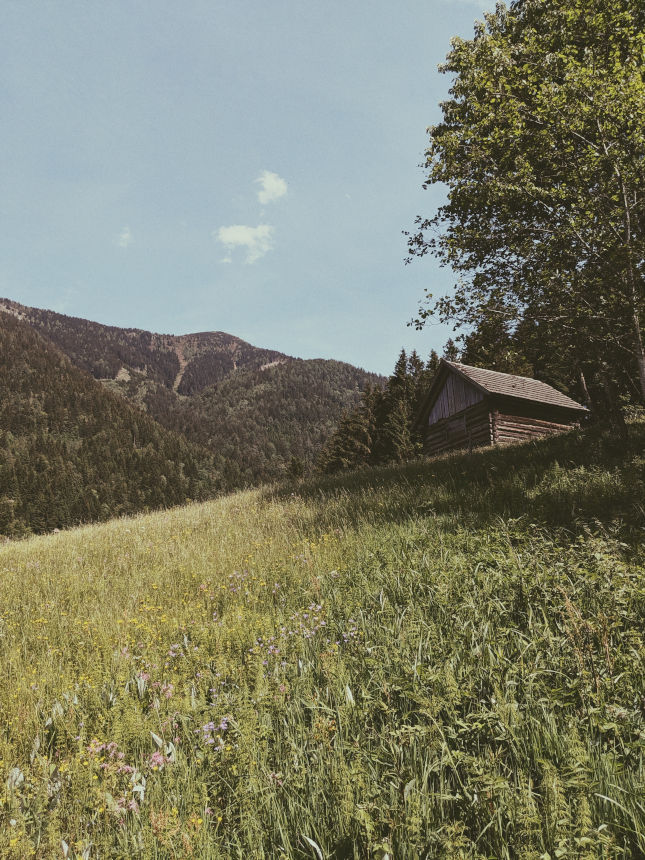
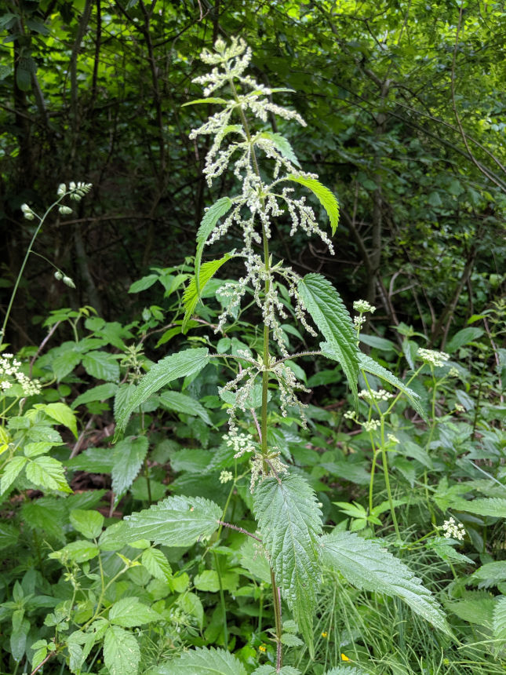
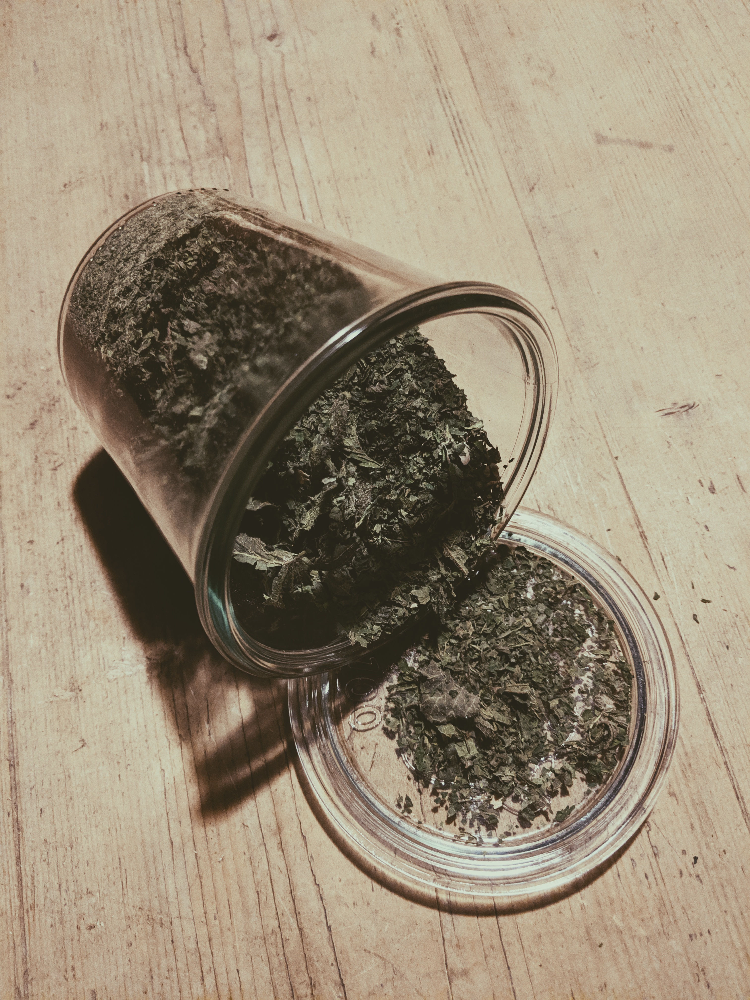
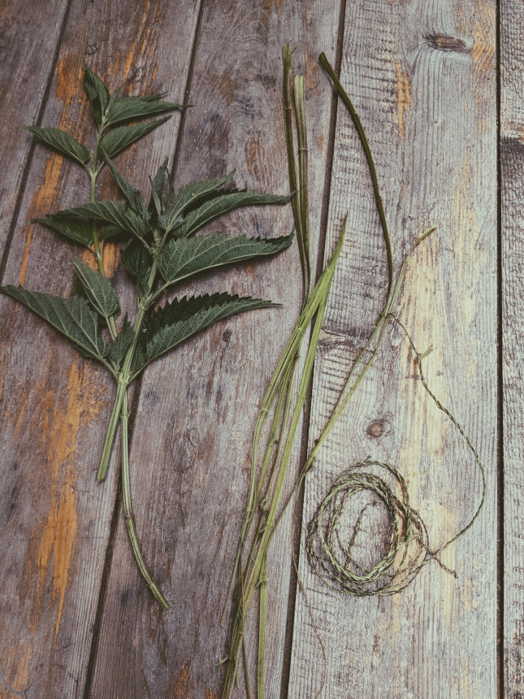
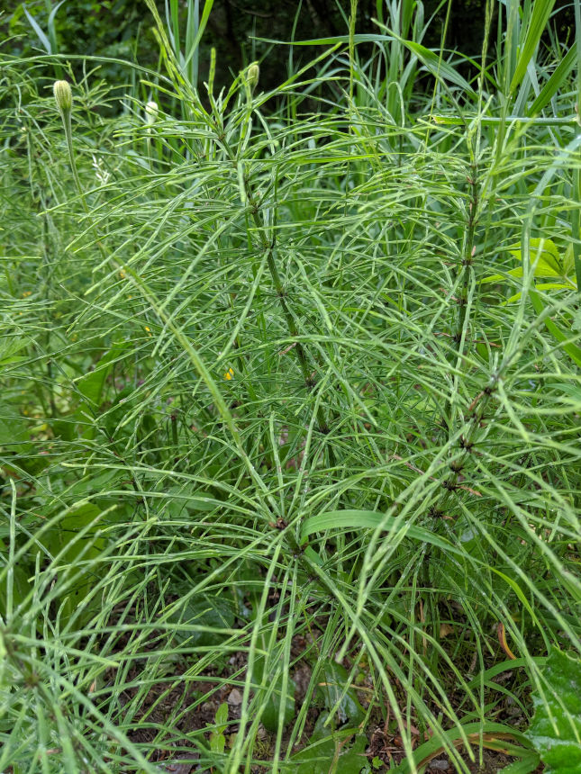
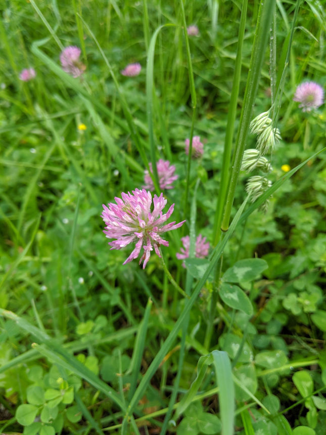

Große Brennessel
Urtica dioica~
Blätter, Wurzel
- Tee
Stängel
- Schnüre
Heilwirkung:
blutreinigend, blutbildend, blutstillend, Stoffwechselfördernd, Harnwegserkrankungen,
Rheumatismus, Gicht, Haarwuchsfördernd, Schuppen, Frühjahrsmüdigkeit, Appetitlosigkeit,
Verstopfung, Durchfall, Magenschwäche, Nierenschwäche, Diabetes (unterstützend),
Bluthochdruck, Menstruationsbeschwerden



Acker-Schachtelhalm
Equisetum arvense~
Blätter, Stängel
- Tee
Heilwirkung:
blutreinigend, blutstillend, entzündungshemmend, harntreibend

Wiesenklee
Trifolium pratenseAn hellen v-förmigen Verfärbung am Blatt zu unterscheiden.
~Blüten
- Tee & Salat
Triebspitzen
- Salat & als Spinat
Heilwirkung:
blutreinigend, Appetitlosigkeit, Gicht, Leberschwäche, Rekonvaleszenz,
Rheuma, Verstopfung, erweichend, Wechseljahrsbeschwerden, Östrogenmangel, Hitzewallungen
